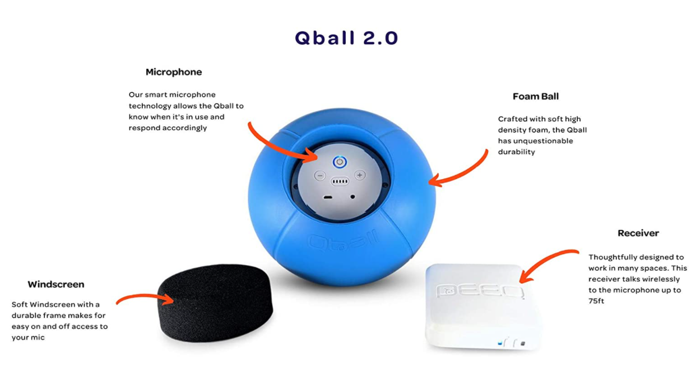

Perfect for use in classrooms, conferenece rooms, training, and other events! In any crowd, there are plenty of opportunities for voices to get lost. The Qball Throwable Wireless Speaker is your solution to make sure that every voice in the room is heard. It is easier to pass around than a micorphone, and more fun than taking a number to talk. Please explore the different features!
The Qball will make your instruction enjoyable and productive! The smart microphone knows when it is being tossed, which gives it the ability to mute itself and avoid unwanted noise. Don't want people to know what you are saying? No problem! Just simply enable the Qball's hush mode. To save battery life, the Qball automatically goes into sleep mode after 15 minutes of no movement. And what if you forget to turn it off? The Qball will automatically turn itself off after two hours of no activity.
